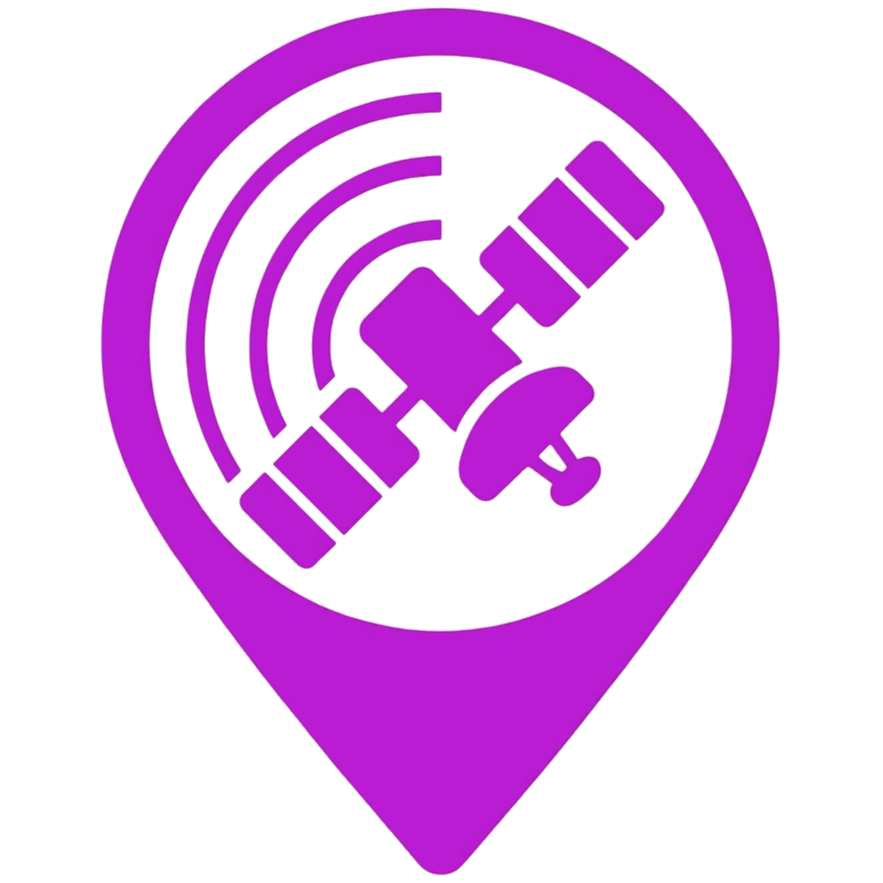

← Map

AR Sky View (Beta)
Camera
Filters
Filters
All (day)
Only Visible (night)
Space Station
GPS
Starlink
Military
Weather
Comm
Geodetic
Technology
Other
Legend
GPS / Navigation
Space Station
Starlink
Communications
Military
Weather
Geodetic
Technology
Other
COMPASS MODE
Move your phone in a figure-8 to calibrate
🧭
Compass Calibration
If satellites appear misaligned, move your phone in a
figure-8 motion
to calibrate the compass.
Got it!
Visible
—
Heading
—°
Tilt
—°
Location
—
×
—
Altitude
—
Velocity
—
Elevation
—
Azimuth
—
Loading satellites...
Fetching TLE data and detecting your location.